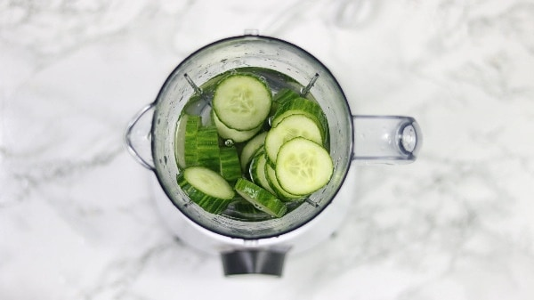
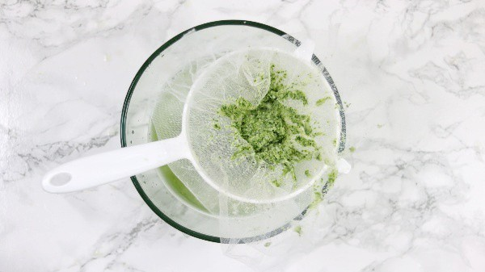
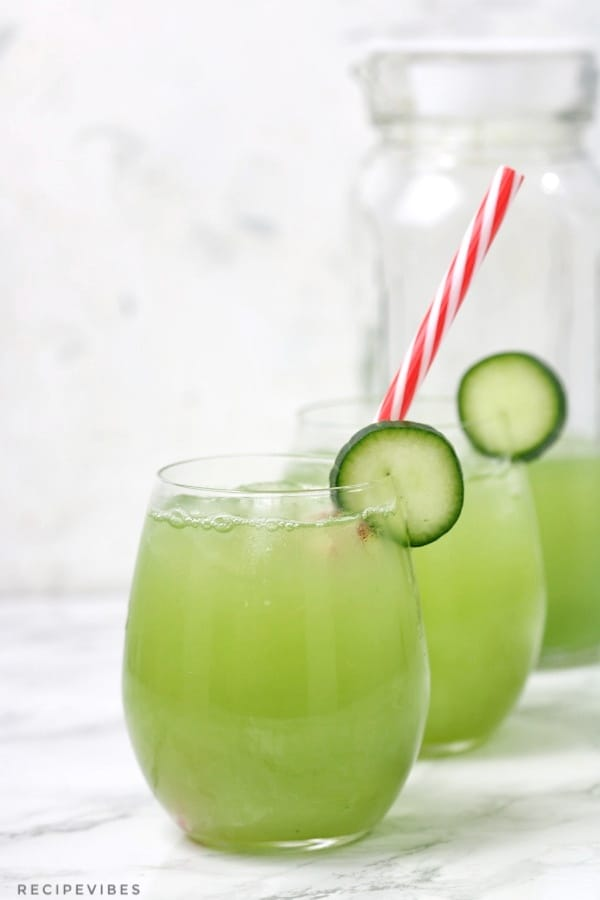

Cucumber Juice
TOOLS YOU'LL NEED
- Blender
- Food processor – If not using a blender you can use a food processor.
- Cheesecloth or mesh sieve -To sieve the juice after blending.
- Pitcher or bottle – To store and serve.
Incredients
How to make Cucumber Juice
- Juice the lime and set aside.
Cut and add cucumber in a blender or food processor then add in water and sugar or honey.

- Blend till smooth then pour through a cheesecloth into a bowl.

- Transfer the juice into a pitcher then add the lime juice and stir.
Serve over ice immediately or put in the fridge to chill.
